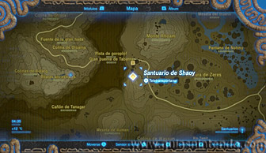
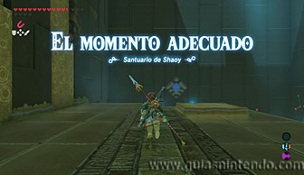
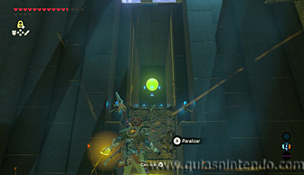
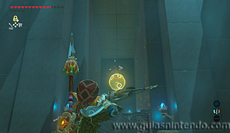
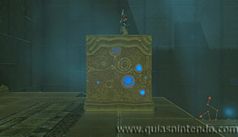
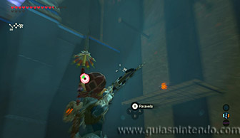
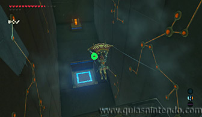
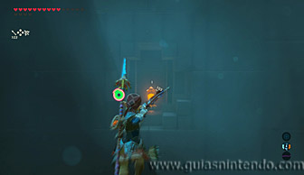
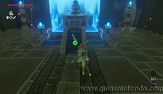

Puedes entrar en este santuario desde que llegas a la región de la torre de las colinas. Se encuentra al lado de la Posta de Tabanta.

Nada más entrar en el santuario verás una plataforma a la que puedes subir aunque de momento no se mueve. Mira al frente desde ella y verás una esfera que se eleva y vuelve a caer. Paralízala con el módulo cuando se encuentre en lo más alto.

Después dispara flechas a la esfera, así lograrás que se desvíe cuando el efecto del módulo termine. De este modo conseguirás que caiga en el agujero correspondiente y se active un mecanismo. La plataforma donde te encuentras se elevará ahora, y si estás sobre ella, saldrás despedido.

Usa ese impulso para acercarte a un cofre que hay en el lado derecho, si sacas el arco en el aire podrás disparar a las cuerdas que sujetan la plataforma de madera y harás caer el cofre que contiene un arco de halcón.

Después vuelve a usar la plataforma para elevarte de nuevo y podrás llegar a un segundo cofre, justo donde se encontraba la esfera. Dentro encuentras un Topacio.

Por último, usa de nuevo el elevador y ahora dispara una flecha al interruptor de cristal que se encuentra situada sobre la salida del santuario. Así abrirás la salida. Cuando llegues al altar podrás examinarlo para obtener un símbolo de valía.
